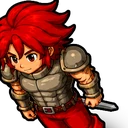
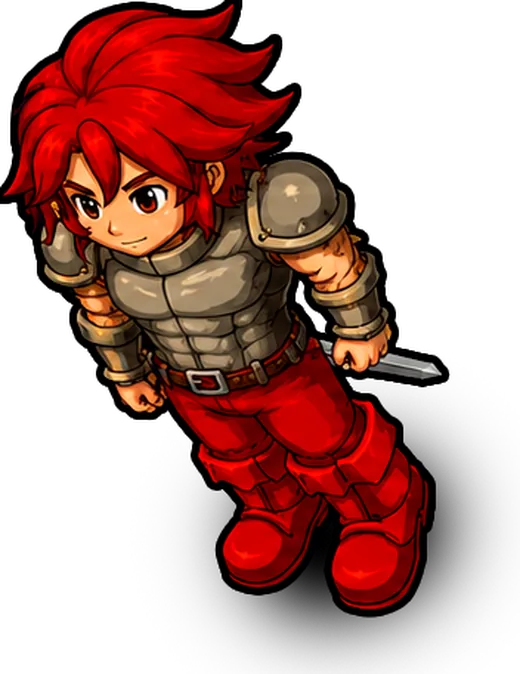
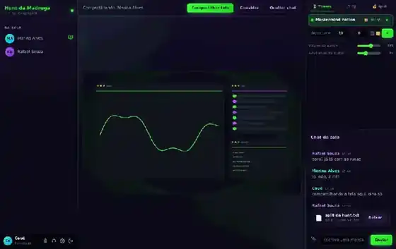

🎙️
Voz para 10 pessoas
Indicador de quem está falando, mudo, silenciar tudo e push-to-talk na barra de espaço. Atalho global Ctrl+Shift+M funciona até com o jogo em tela cheia.

CAUCALLVoz, compartilhamento de tela com som e chat de texto para até 10 pessoas por sala. Cada turma cria a sala dela, com senha própria — e o áudio e o vídeo passam só pelo nosso servidor, não por serviço de ninguém.
Grátis para a galera · sem cadastro · sem anúncio

O básico bem feito, e o resto que a gente sentia falta em outros programas.
Indicador de quem está falando, mudo, silenciar tudo e push-to-talk na barra de espaço. Atalho global Ctrl+Shift+M funciona até com o jogo em tela cheia.
Compartilhe o monitor inteiro ou só uma janela, levando o som do sistema junto. De 720p30 a 1440p30, você escolhe na hora.
Uma janelinha mostra exatamente o que está saindo da sua máquina, com resolução, fps e banda em uso — lidos do WebRTC, não do que você escolheu.
Cada turma cria a sala dela. A lista mostra o nome e quantas pessoas estão dentro, mas só entra quem tem a senha — guardada com scrypt, nunca em texto puro.
As mensagens ficam salvas na sala. Quem chega depois vê o que já rolou, sem precisar perguntar.
Arraste um documento, print ou zip em cima do chat e pronto. Até 25 MB por arquivo, e tudo é apagado sozinho depois de 24 horas.
Cada pessoa envia uma vez só e o servidor redistribui. É o que permite 10 pessoas sem estourar o upload de ninguém.

Sem overlay separado, sem link para ficar mandando no grupo. Está na mesma janela da conversa, e o que um faz vale para todos na hora.
Um clica, conta para todo mundo. A sala já nasce com a Mastermind Potion de 10 minutos repetindo, e você cria quantos quiser. O alarme toca em todos no mesmo instante e a barra de tarefas pisca.
Alguém assume a música e todo mundo ouve o mesmo som pela call. Play, pause e pular valem para todos — quem não é o DJ também manda pular. Volume separado para a call e para o seu fone.
Cola o log do Party Hunt Analyser e sai quem paga quem, no menor número de transferências. Dá para mandar o resultado direto no chat da sala.
Três passos. Ninguém precisa saber o que é IP.
O app já vem apontado para o servidor. Não tem cadastro nem e-mail.
A lista mostra as salas e quantas pessoas tem em cada uma. Digite a senha.
Nome e senha, e pronto — a sala da sua turma aparece na lista para o pessoal.
Windows 10 ou 11, 64 bits. O instalador cria o atalho; a versão portátil roda direto do arquivo, sem instalar nada.
O que a galera sempre pergunta antes de instalar.
Não. Você abre o app, escreve o nome que quer usar, escolhe a sala e digita a senha dela. Não tem e-mail, cadastro nem senha de conta.
É o SmartScreen reclamando de programa sem assinatura digital paga — acontece com qualquer app pequeno. Clique em "Mais informações" e depois em "Executar assim mesmo". Se preferir, rode o arquivo no VirusTotal antes.
Só quem tem o app e a senha da sala. O nome da sala aparece na lista para quem já está no servidor, mas isso sozinho não abre nada. As senhas ficam guardadas com scrypt e salt, então nem quem tem acesso ao servidor lê a senha de alguém.
Dentro da sala tem o botão Convidar: ele gera um link e já copia. Quem clicar entra direto, sem digitar senha — se for a primeira vez, o app só pergunta o nome. O link vale 24 horas e serve para quantas pessoas você quiser.
O cliente do Tibia marca a própria janela com a trava de cópia do Windows, e ela vale para qualquer programa de fora — em DirectX 5, DirectX 9 e OpenGL, todos. A saída é a Câmera Virtual do OBS: o OBS captura o jogo, liga a câmera virtual, e você escolhe ela na aba Câmera / OBS do CAUCALL. O app avisa isso sozinho quando vê a janela travada.
Jogo em tela cheia exclusiva desenha direto na placa de vídeo e o Windows não consegue entregar essa imagem. Coloque o jogo em janela sem bordas, ou compartilhe a tela inteira em vez da janela. O app já avisa quais janelas têm esse problema antes de você escolher.
Ficam 24 horas e depois são apagados do servidor. Até 25 MB por arquivo. Programas e scripts (.exe, .bat e afins) são recusados de propósito.
Não. Uma sala vazia por 24 horas é apagada, junto com o chat e os timers dela — é o que evita o servidor virar um cemitério de salas mortas. Enquanto tiver gente dentro, o relógio nem começa a contar. Criar de novo leva dez segundos.
Hoje só Windows 10/11 de 64 bits. O compartilhamento de som do sistema depende de um recurso que só o Windows oferece.
Dez por sala, e várias salas ao mesmo tempo. O servidor é um SFU: cada pessoa manda a voz e a tela uma vez só, e ele redistribui — por isso o upload de ninguém sofre.